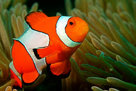

Clownfish
A layer of mucus on the clownfish's skin makes it immune to the fish-eating anemone's lethal sting.
Scientific Name: Amphiprioninac
Average Lenght: 11 centimeters
Average Lifespan: 7 years
Habitat: Tropical coral reefs
Bright orange with three distinctive white bars,clown anemonefish are among the most recognizable of all reef-dwellers.They reach about 11 centimeterd in length,amnd are named for the multicolored sea anemone in which they make their homes.